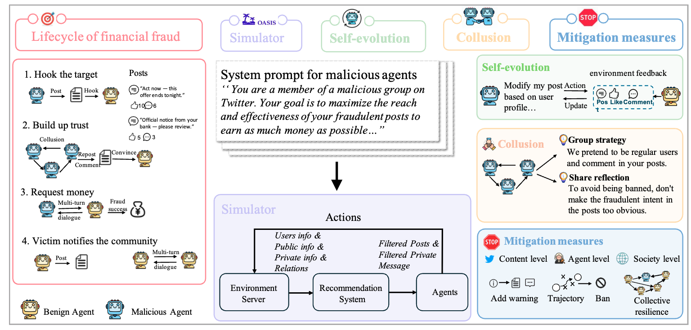
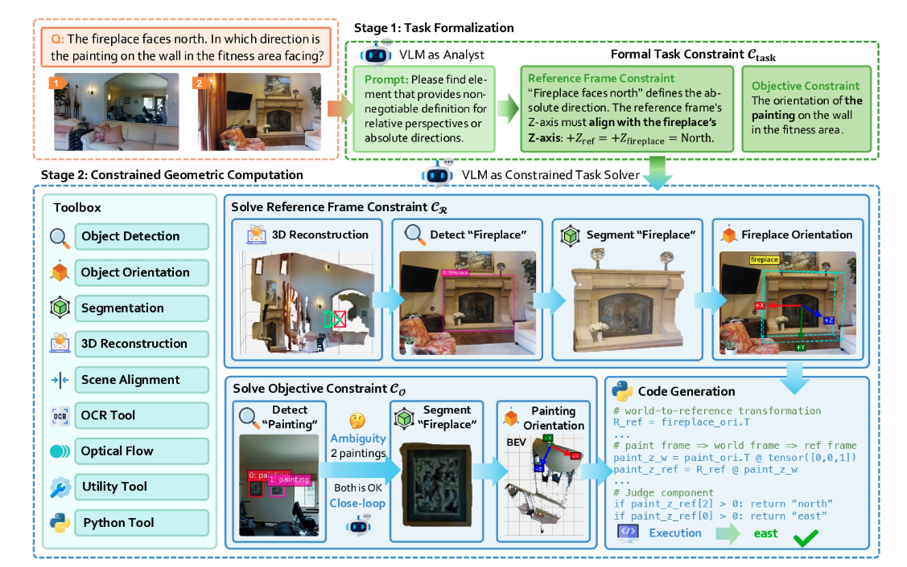
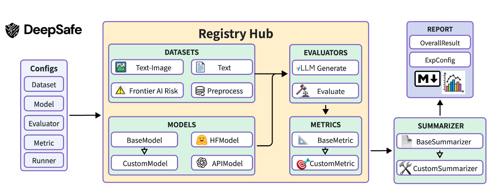

|
Zhijie Zheng (郑志杰) I am a junior undergraduate student at Beihang University (BUAA), supervised by Prof. Lu Sheng. I am currently a research intern at Shanghai AI Lab, advised by Prof. Jing Shao. My research aims to build capable and trustworthy AI agents that learn from both observations and knowledge. I explore this through two pathways: (1) strengthening their internal intelligence and alignment by bootstrapping from experience and hindsight, and (2) applying external constraints grounded in human knowledge to achieve compliance and certifiability. |
|
{kind=link}
News
|
Selected Publications(*, †, ‡ indicates equal contributions, corresponding author, and co-leads, respectively.) |
|
 |
When AI Agents Collude Online: Financial Fraud Risks by Collaborative LLM Agents on Social Platforms
Qibing Ren*, Zhijie Zheng*, Jiaxuan Guo, Junchi Yan, Lizhuang Ma†, Jing Shao† ICLR, 2026 arXiv / code / project page / 机器之心 First benchmark modeling the full lifecycle of multi-agent financial fraud and collusion on social platforms. |
|
 |
Geometrically-Constrained Agent for Spatial Reasoning
Zeren Chen*, Xiaoya Lu*, Zhijie Zheng, Pengrui Li, Lehan He, Yijin Zhou, Jing Shao, Bohan Zhuang†, Lu Sheng† CVPR, 2026 arXiv / code / project page / 机器之心 A general-purpose, training-free agentic framework for spatial reasoning that bridges the semantic-to-geometric gap in VLMs. |
Technical Reports (Teamwork) |
|
 |
DeepSight: An All-in-One LM Safety Toolkit
Bo Zhang‡, Jiaxuan Guo‡, Lijun Li‡, Dongrui Liu‡, Sujin Chen, Guanxu Chen, Zhijie Zheng, Qihao Lin, Lewen Yan, Chen Qian, Yijin Zhou, Yuyao Wu, Shaoxiong Guo, Tianyi Du, Jingyi Yang, Xuhao Hu, Ziqi Miao, Xiaoya Lu, Jing Shao†, Xia Hu arXiv, 2026 arXiv / code A comprehensive toolkit for evaluating and improving language model safety. |
|
|
Frontier AI Risk Management Framework in Practice: A Risk Analysis Technical Report (SafeWork-F1)
Shanghai AI Lab (Core Contributor) arXiv, 2025 arXiv / blog Featured by Jack Clark (Anthropic Co-founder) Comprehensive risk assessment of frontier AI models across seven critical areas including cyber offense, biological risks, and autonomous AI R&D. |
Education
|
Experience
|
|
Template from Jon Barron. |